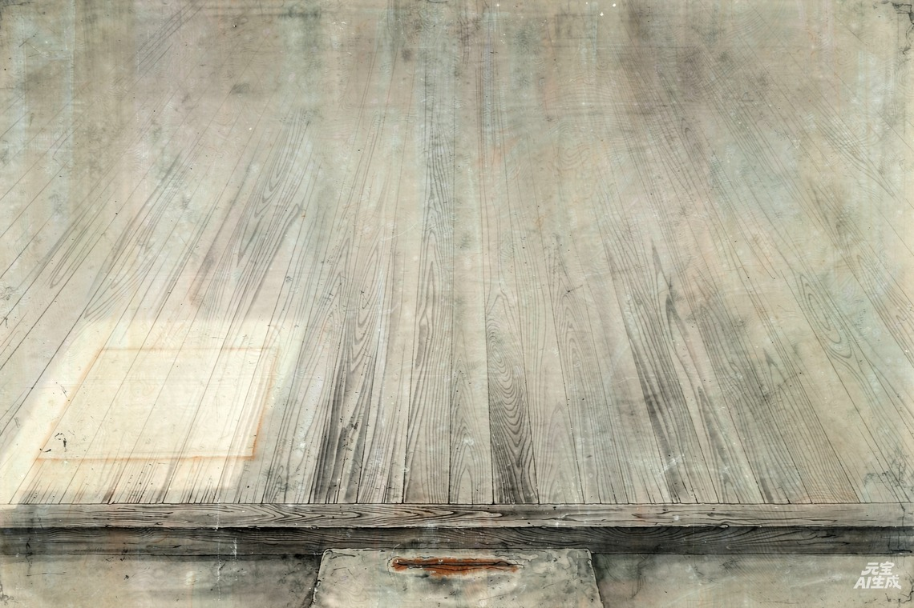
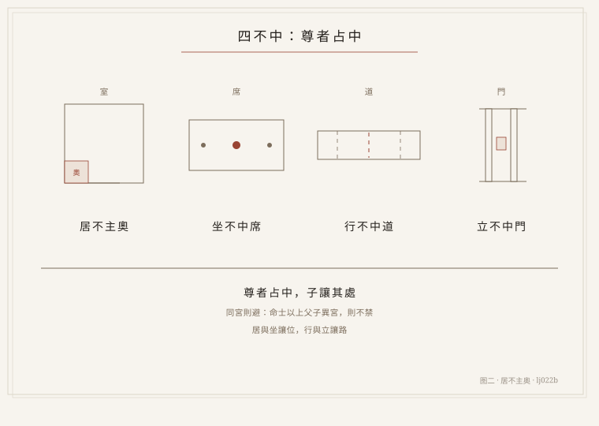

曲礼上 · 一·二十三 · 第 22 课
这一节讲孝子在屋里的位置：四样最尊之处，一样也不占。
说什么事：居不主奥，坐不中席，行不中道，立不中门；食飨不为概，祭祀不为尸，听于无声、视于无形；不登高，不临深，不苟訾，不苟笑。
落在哪一层：教。上节讲在外的样子（不受、不敢），这节讲在门内的位置——不在人前，在家里的四个点上。
为何编在此位：一·二十二的三「不敢」还在言语与进退上；此节连站哪儿、坐哪儿都要让，减到极处。
【经】為人子者，居不主奧，坐不中席，行不中道，立不中門。食饗不為概，祭祀不為尸。聽於無聲，視於無形。不登高，不臨深，不苟訾，不苟笑。
主奥 郑注：「谓与父同宫者也，不敢当其尊处。室中西南隅谓之奥。」疏：「主犹坐也……西南隅隐奥无事，故呼其名为奥。常推尊者于闲乐无事之处，故尊者居必主奥也。」
中席 疏举旧通二说：「一云敬无余席，非唯不可上，亦不可中也；一云共坐则席端为上，独坐则席中为尊，尊者宜独，不与人共。」
中道 疏：「尊者常正路而行，卑者故不得也。男女各路，路各有中也。」
中门 郑注：「中门，谓枨闑之中央。」疏：「中央有闑，闑傍有枨，枨谓之门梐……是尊者所行，故人子不得当之而行也。」
同宫 郑注以四事皆「与父同宫者」；若命士以上，「父子皆异宫则不禁」，因「有命既尊，各有臣仆，子孙应敬己」。
食飨不为概 概，量也。郑注：「不制待宾客馔具之所有。」熊氏：「其事由尊者所裁，而子不得辄豫限量多少也。」
祭祀不为尸 尸代尊者受祭。郑注：「尊者之处，为其失子之道。」疏：「尸代尊者之处，故人子不为也。」
听于无声，视于无形 郑注：「恒若亲之将有教使然。」疏：「虽无声无形，恒常于心想像，似见形闻声。」
不苟訾，不苟笑 郑注：「为其近危辱也。人之性，不欲见毁訾，不欲见笑。君子乐然后笑。」疏：「苟，且也。相毁曰訾。不乐而笑为苟笑。」
为人子者，住不占奥（室之西南隅），坐不占席中，行不占道中，立不占门中。待宾客的馔具多少，不由自己限量；祭祀不充当尸；听那无声之声，视那无形之形。不登高，不临深，不随意毁人，不随意发笑。
尊者占中，子让其处。四「不中」是一理，三「不为」是一理，二「不」又是一理——全是减，减到没有一处是自己的。
甲·四不中
第一层 奥是「隐奥无事」处 疏解「奥」极实：室向南开户，近东南角，西南隅便「隐奥无事」，故尊者居之。所以「居不主奥」不是谦让一个方位，是让出那个最安闲、最不必干活的位置。孝子的第一个让步，是让出「舒服」。
第二层 「中席」的两说 疏举旧通二说：一说「敬无余席」，连中也不可；一说共坐席端为上、独坐席中为尊，尊者宜独，故卑者不得居中。二说取舍不同，指向一处：席上有一个位置是尊者的，子不去坐。
第三层 「中道」与「中门」是通行权 道有左右，男女各一路，路各有中；门有枨有闑，中央是尊者所行。故这两条让的不是地方，是走法：哪条线可以走，哪一处可以穿过。位置之让，到行走之让，才是真的让。
第四层 「与父同宫」是一道闸 郑注一句极要紧：四事皆谓与父同宫者。命士以上父子异宫，「则不禁」，因为「有命既尊，各有臣仆，子孙应敬己」。所以这四条不是永恒的天理，是一套按居处与身份而定的规矩：同一屋檐下，才需要让。
乙·三不为
第五层 食飨不为概：不定量 概是量。待宾客的馔具多少，由尊者裁，子不得预先限量。这一条极细：不是不许你办，是不许你定标准。办事的人最易在此越位——事情做了，数目自己定了，尊者只剩签字。
第六层 祭祀不为尸 尸是代尊者受祭的那个人。郑注说「为其失子之道」——人子一旦当尸，就站到了被祭的位置上，父子之分当场颠倒。故此条不是忌讳，是守位：有些位置坐上去了，关系就不成立了。
第七层 听于无声，视于无形 郑注：「恒若亲之将有教使然。」疏：「虽无声无形，恒常于心想像，似见形闻声。」这是全节最向里的一句：孝子听见的不是声音，是父母将要吩咐的那个意思。礼到此已不是行为规范，是心的常态。
丙·二不
第八层 不登高，不临深 郑注以「近危辱」释之：危险之地，一失足则辱及亲。故这不是怕死，是不肯让父母担这个心。
第九层 不苟訾，不苟笑 郑注说得最见人情：「人之性，不欲见毁訾，不欲见笑。」疏：「不乐而笑为苟笑。」——随口的讥评与随口的笑，都是拿别人的难受换自己的一时快。孝子不为，因为这两种快都近于「辱」。
与今日何干 今日讲「边界感」，多是划出自己的地盘；此节反过来，讲的是主动让出尊者的地盘。四不中让位置，三不为让裁量、让名分、让自己的心，二不让风险与口舌。九条读下来，没有一条是「我要什么」，全是「我不占什么」。
| 左 | 右 |
|---|---|
| 居不主奥：西南隅，尊者所居 | 坐不中席：独坐席中为尊 |
| 行不中道：尊者常正路而行 | 立不中门：枨闑之中央 |
| 食飨不为概：数目由尊者裁 | 祭祀不为尸：尸代尊者之处 |
| 听于无声，视于无形 | 恒若亲之将有教 |
| 不登高，不临深：近危 | 不苟訾，不苟笑：近辱 |

